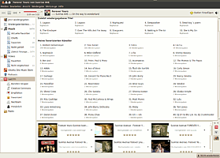

Banshee
Dieser Artikel wurde für die folgenden Ubuntu-Versionen getestet:
Ubuntu 14.04 Trusty Tahr
Zum Verständnis dieses Artikels sind folgende Seiten hilfreich:
Banshee  ist ein sehr vielseitiger Medienplayer, der sich sehr gut in GNOME oder Xfce integriert. Banshee kann sowohl die Musikbibliothek als auch Videos und Podcasts abspielen und organisieren. Außerdem kann man direkt aus Banshee heraus Musik-CDs in verschiedene Formate rippen und Audiodateien wieder als Audio-CD brennen. Banshee wartet mit folgenden weiteren Funktionen auf:
ist ein sehr vielseitiger Medienplayer, der sich sehr gut in GNOME oder Xfce integriert. Banshee kann sowohl die Musikbibliothek als auch Videos und Podcasts abspielen und organisieren. Außerdem kann man direkt aus Banshee heraus Musik-CDs in verschiedene Formate rippen und Audiodateien wieder als Audio-CD brennen. Banshee wartet mit folgenden weiteren Funktionen auf:
Bibliothekverwaltung und intelligente Playlisten
Automatische Suche nach Album-Covern
Verwaltung und Abspielen von Streaminginhalten
Scrobbeln zu LastFM
Unterstützung von iPod, Android G1, MTP-Geräten und anderen tragbaren Geräten
Hörbuchverwaltung
Unterstützung von Erweiterungen
Die Oberfläche von Banshee ähnelt der von Rhythmbox oder Amarok.
Hinweis:
Banshee wird aktuell anscheinend nicht mehr aktiv weiter entwickelt. Die aktuellste Version wurde im Frühjahr 2014 veröffentlicht. Der Player ist zwar für Ubuntu 16.04 noch in den Quellen, allerdings kaum verwendbar.
Installation¶
Banshee kann direkt aus den Paketquellen über folgendes Paket installiert [1] werden:
banshee (universe)
 mit apturl
mit apturl
Paketliste zum Kopieren:
sudo apt-get install banshee
sudo aptitude install banshee
Anschließend kann man das Programm über die Eingabe von "Banshee" in der Dash von Unity oder bei Ubuntu-Varianten mit einem Anwendungsmenü über "Unterhaltungsmedien -> Banshee Medien-Wiedergabeprogramm" starten.
PPA¶
Bis Ubuntu 14.04 kann die aktuelle stabile Version aus dem "Personal Package Archiv" (PPA) [2] der Entwickler installiert werden:
Adresszeile zum Hinzufügen des PPAs:
ppa:banshee-team/ppa
Hinweis!
Zusätzliche Fremdquellen können das System gefährden.
Ein PPA unterstützt nicht zwangsläufig alle Ubuntu-Versionen. Weitere Informationen sind der  PPA-Beschreibung des Eigentümers/Teams banshee-team zu entnehmen.
PPA-Beschreibung des Eigentümers/Teams banshee-team zu entnehmen.
Damit Pakete aus dem PPA genutzt werden können, müssen die Paketquellen neu eingelesen werden.
Nach dem Aktualisieren der Paketquellen erfolgt die Installation wie oben beschrieben. Bei neueren Ubuntus ist bereits die aktuelle Version in den offiziellen Quellen.
Benutzung¶
Die Benutzung ist intuitiv, und besonders Umsteigern von Rhythmbox wird sie sehr leicht fallen. In der linken Übersicht hat man schnellen Zugriff auf Medienbibliothek, Playlisten, Podcasts und Radiostreams. Der Bibliotheksbrowser zeigt Interpreten- und Albenlisten wahlweise links von oder oberhalb der Audiostücke an, kann aber auch unter "Ansicht" abgestellt werden.
Musikbibliothek¶
Unter "Bearbeiten -> Einstellungen -> Allgemein" kann man den gewünschten Speicherort der Musikbibliothek einstellen. Banshee kann auch die Lagerung der Musikdateien im Dateisystem übernehmen, dazu sollte man weitere Einstellungen aktivieren:
"Beim Importieren alle Dateien in den Medienordner kopieren"
"Metadaten in Datei schreiben" - sollte unbedingt aktiviert sein, um die MP3-Tags nachhaltig zu verändern
"Datei- und Ordnernamen aktualisieren" - Die Songs werden dann anhand ihrer Tags geordnet im Dateisystem abgelegt. Bei Veränderung der MP3-Tags wird sofort der Speicherort mit aktualisiert.
Auf welche Art und Weise die Dateien und Ordner in der Musikbibliothek benannt werden, kann man unter "Dateisystemorganisation" einstellen. Wem die dort vorgeschlagenen Optionen nicht genügen, der kann ein eigenes Schema wie folgt einstellen: Man öffnet den gconf-editor und navigiert zu "apps -> banshee-1 -> library" und kann dort die Schlüssel "file_pattern" für den Dateinamen und "folder_pattern" für den Ordnernamen einstellen. Mögliche Werte sind
| Variable | Bedeutung |
| %artist% | Künstler (Banshee <=1.5.x) |
| %album_artist% | Künstler des Albums (Banshee >1.5.x) (Compilations können bei Banshee als solche markiert werden und ein Künstler für die ganze Compilation angeben werden (z.B. "Various"). Diese Variable erzeugt dann bei Compilations nur einen Ordner statt mehrerer) |
| %album_artist_initial% | Der erste Buchstabe des Album-Künstlers (album_artist). |
| %track_artist% | Künstler des Titels (Banshee >1.5.x) (Im Gegensatz zu %album_artist% ist tatsächlich der MP3-Tag des Interpreten gemeint.) |
| %album% | Name des Albums |
| %genre% | Musikgenre |
| %title% | Name des Titels |
| %year% | Jahr |
| %disc_number% | CD-Nummer (bei Album mit mehreren CDs) |
| %disc_count% | Anzahl CDs (bei Album mit mehreren CDs) |
| %track_number% | Titelnummer auf dem Album |
| %track_number_nz% | Titelnummer auf dem Album (ohne führende Nullen) |
| %track_count% | Gesamtanzahl der Titel auf dem Album |
| %track_count_nz% | Gesamtzahl der Titel auf dem Album (ohne führende Nullen) |
| %composer% | Komponist |
| %conductor% | Dirigent |
| %grouping% | Gruppierungen |
| %path_sep% | Ordnertrennzeichen (/) |
Welche Variablen der aktuelle Entwicklungsstand vorsieht, kann man hier im Quellcode sehen. Auch ohne Programmierkenntnisse erkennt man zumindest die Variablen-Namen.
Außerdem können beliebige Zeichen als Konstanten eingefügt werden, z.B. "-" oder "." als Trennzeichen. In geschweifte Klammern gesetzte Teile werden nur eingefügt, wenn die Variable auch gesetzt ist. Durch "{CD%disc_number}" kann dem Namen beispielsweise "CD1" vorangestellt werden. Der Namensteil entfällt aber komplett, wenn es sich um eine Einzel-CD handelt, bei der die Tags "CD-Nummer" und "Anzahl CDs" nicht gefüllt sind.
Eine Compilation soll als Beispiel die Funktionsweise verdeutlichen:
| Schlüssel | Ergebnis |
| folder_pattern %artist%%path_sep%%album% | Kate Perry/Bravo Hits Vol.64/04. Kate Perry - Hot N Cold.mp3 |
| file_pattern %track_number%. %artist% - %title% | |
| folder_pattern %album_artist% - %album% | Various - Bravo Hits Vol.64/04. Kate Perry - Hot N Cold.mp3 |
| file_pattern %track_number%. %track_artist% - %title% | |
| folder_pattern %genre%%path_sep%%%album% - %album_artist% (%year%) | Pop/Bravo Hits Vol.64 - Various (2009)/Bravo Hits Vol.64 - 04 - Kate Perry - Hot N Cold.mp3 |
| file_pattern %album% - %track_number% - %track_artist% - %title% | |
Bemerkungen:
Compilations können in einem Ordner zusammengefasst werden.
Eine schön strukturierte Bibliothek funktioniert nur, wenn die Tags auch entsprechend gefüllt sind. Leere Tags werden z.B. durch "Unknown" oder "0" ersetzt.
Audio-CD¶
Banshee kann Audio-CDs in die Musikbibliothek importieren. Das Format kann unter "Bearbeiten -> Einstellungen", auf dem Reiter "Quellspezifisch" eingestellt werden. Dazu wählt man in der oberen Drop-Down-Box den Eintrag "Audio-CD" aus und kann dann das Import-Format auswählen (z.B. MP3, Ogg Vorbis, FLAC, WAV).
Wiedergabelisten¶
Unter "Medien" kann man Wiedergabelisten anlegen sowie vorhandene importieren. Intelligente Wiedergabelisten sind automatische Zusammenstellungen nach bestimmten Kriterien z.B.
Albumtitel enhält...
Interpret ist...
Wiedergabeanzahl ist maximal...
Es werden auch zahlreiche intelligente Wiedergabelisten vorgeschlagen, z.B.:
Favoriten - Titel, die mit 4 oder 5 Sternen bewertet wurden
Nicht gehört - Titel, die noch nicht gehört oder übersprungen wurden
Unbewertet - Titel, die noch nicht bewertet wurden
80 Minuten der Favoriten - Eine Audio-CD voll mit Favoriten
Lesezeichen¶
Zur Zeit gibt es kein Lesezeichen-Plugin. Lesezeichen kann man unter "Werkzeuge" anlegen. Dabei kann es sich auch um eine Stelle in einem Song handeln. Banshee speichert dann die entsprechende Sekunde als Lesezeichen. Daher eignet sich Banshee sehr gut für das Anhören von Hörbüchern.
Suchfilter¶
Banshee besitzt eine erweiterte Suchfunktion, mit deren Hilfe man schnell und einfach einen Suchfilter auf Metadaten (ID3-Tags) der Musikdatenbank anwenden kann. Eine Liste mit Suchkriterien (Filtern) findet sich unten in der Tabelle. Diese Filter können mit Operatoren und logischen Verknüpfungen kombiniert werden. Banshee guide
Beispiele
dave matthews- Beide Begriffe müssen vorhanden sein (UND)dave, matthews- Einer der Beiden Begriffe muss vorhanden sein (ODER)dave or matthews- wie im vorherigen Beispieldave | matthews- wie im vorherigen Beispiel-"dave matthews"- alles Titel die nicht beide Begriffe beinhaltentitle:fraud- Titelnamen die den Suchbegriff "fraud" beinhaltenon=awkward- Titelnamen die mit "awkward" anfangenby=="august burns red"- Titel von genau dem Künstler "august burns red"rating>3- Titel bei denen die Bewertung größer 3 ist(by:"dave matthews", (by=august on=messengers)) | rating>2- Kombination mehrere Suchfilter
| Operatoren | Bedeutung |
␣ (Leerzeichen) | UND Verknüpfung |
OR, or, |, , | ODER Verknüpfung |
NOT, not, - | Ausschluss |
: | ist vorhanden |
= | startet mit |
== | ist gleich |
< | ist kleiner |
> | ist größer |
<= | ist kleiner oder gleich |
>= | ist größer oder gleich |
| Filter | Bedeutung |
artist, by, artists | Künstlername |
title, titled | Titelname |
album, on, from | Albumname |
disc, discnum, cd | CD Nummer |
year, released | Aufnahme-/Veröffentlichungsdatum |
rating, stars | Bewertung |
plays, playcount | Anzahl der Wiedergaben |
skips, skipcount | Anzahl wie oft der Titel übersprungen wurde |
path, uri, file | Speicherort der Datei |
mimetype, type, format | Art des Datenformates (ogg, mp3, ...) |
lastplayed, played | Datum der letzten Wiedergabe |
addedon, importedon, dateadded | Datum des hinzufügens zur Bibliothek |
size, filesize | Dateigröße |
Alben-Cover¶
Beim Importieren neuer Songs werden die Alben-Cover automatisch heruntergeladen. Alternativ kann man das manuell unter "Werkzeuge -> Alben-Cover" starten.

Last.fm¶
Unter "Werkzeuge -> Last.fm" kann man sein Last.fm-Konto konfigurieren und auf seine Profilseite zugreifen.
Hinweis:
Last.fm hat den Radiodienst ab 28.04. 2014 komplett eingestellt, eine Wiedergabe ist nicht mehr möglich!
Podcasts¶
Über "Medien -> Podcast abonnieren" kann man neue Podcasts hinzufügen. Da Banshee sowohl Musik als auch Videos unterstützt, ist man nicht auf die eine oder andere Form des Podcasts festgelegt.
Mobile Geräte synchronisieren¶
An den Rechner angeschlossene Geräte¶
Banshee erkennt bestimmte mobile Mediaplayer wie den iPod oder Handys wie das G1 automatisch. Einige Geräte werden aber nicht erkannt, wofür es jedoch eine Lösung gibt. Der einfachste Weg, weitere Geräte als Mediaplayer zu deklarieren, geht über die Methode, im Wurzelverzeichnis des Gerätes eine Datei .is audio player mit folgendem Inhalt anzulegen:
audio_folders=Music/ folder_depth=2 output_formats=audio/mpeg,audio/mp3,audio/x-aac,audio/ogg
Dabei können die Parameter folgendermaßen angepasst werden:
| Variable | Bedeutung |
audio_folders | Gibt an, in welchen Ordnern die Musik gespeichert wird. Dieser Ordner muss existieren, da ansonsten Banshee den Playerinhalt nicht auslesen kann. Mehrere Ordner können durch Kommata getrennt werden. . steht dabei für die oberste Ordnerebene des Players. |
folder_depth | Gibt an, wie tief die Ordnerhierarchie auf dem Player werden soll. 1 sorgt für die Ablage der Titel nach dem Schema Artist - Album/Track - Titel.mp3, 2 für Artist/Album/Track - Titel.mp3. |
output_formats | Gibt an, welche Audioformate der Player versteht. Kann der Player nur MP3-Dateien abspielen, sollte hier nur audio/mp3 stehen. |
Das Gerät wird dann (nach erneutem Verbinden) von Banshee als Mediaplayer erkannt und kann synchronisiert werden. Die Musik die auf das Gerät übertragen wird, wird dann im Verzeichnis Music, nach der von folder_depth bestimmten Struktur, abgelegt.
Wie man eine automatische Erkennung für einen Media Player beisteuern kann, steht hier beschrieben: Help me make your music player or phone recognized as such under Linux
Netzwerkgeräte¶
Viele moderne Handys erlauben es, einen SSH-Server zu installieren, über den sie dann z.B. über WLAN angesprochen werden und aus der Sicht von Applikationen, die wie Nautilus mit gvfs arbeiten können, sogar in das Dateisystem des Computers eingebunden werden können. Unglücklicherweise können die C#-Bindings, die Banshee kennt, dies nicht. Aber dank fusefs ist es möglich, auch über SSH angeschlossene Geräte wie lokale Geräte aussehen zu lassen:
sudo mkdir /media/Sulla.home sudo chown BENUTZER:BENUTZER /media/Sulla.home/ sudo chmod a+r /etc/fuse.conf
Der nächste Schritt ist, in enem Editor mit Root-Rechten die folgende Zeile zur Datei /etc/fstab hinzuzufügen:
sshfs#BENUTZERNAME@IPADRESSE:/mnt/sdcard /media/Sulla.home fuse user,allow_other,portPortAufDenDerSSHserverHoert
Das Gerät lässt sich jetzt ganz ohne sudo in das lokale Filesystem einbinden und wird, wenn es eine .is_audio_player-Datei enthält, mit etwas Glück von Banshee gefunden:
mount /media/Sulla.home
Hörbücher¶
Banshee besitzt seit einiger Zeit die Möglichkeit, Hörbücher als solche in eine separate Bibliothek zu sortieren. Unter "Bearbeiten -> Einstellungen -> Quellspezifisch" oder per  -Klick auf "Audiobooks etc." in der Seitenleiste kann man analog zur Musikbibliothek eine Quelle angeben oder manuell Ordner oder Dateien importieren.
-Klick auf "Audiobooks etc." in der Seitenleiste kann man analog zur Musikbibliothek eine Quelle angeben oder manuell Ordner oder Dateien importieren.
Irritierenderweise werden Dateien zunächst in die Musikbibliothek importiert, was daran liegen kann, dass auch an dieser Funktion zur Zeit noch entwickelt wird. Die einzige Möglichkeit, Hörbücher in die separate Bibliothek zu bekommen, ist, sie per drag&drop aus der Musik-Bibliothek zu importieren. Aus den Listen, wie z.B. der "Zuletzt hinzugefügt"-Liste, funktioniert das Hinüberziehen nicht.
Erweiterungen¶
Für Banshee existieren viele Erweiterungen. Installierte Erweiterungen werden unter "Bearbeiten -> Einstellungen -> Erweiterungen" (de-)aktiviert und konfiguriert. Die meisten Erweiterungen können über die offiziellen Paketquellen installiert werden. Möchte man alle in den Quellen verfügbaren Erweiterungen installieren, so ist das über das folgende Metapaket möglich:
banshee-community-extensions (universe)
mit apturl
Paketliste zum Kopieren:
sudo apt-get install banshee-community-extensions
sudo aptitude install banshee-community-extensions
Die Erweiterungen können alternativ einzeln installiert werden. Die Paketnamen haben jeweils die Form banshee-extension-*. Einige Beispiele sind in den folgenden Abschnitten zu finden.
Mirage¶
Eine der interessantesten Erweiterungen ist Mirage . Mirage analysiert beliebige Songs und erstellt Playlisten ähnlich klingender Stücke. Es sollte jedoch berücksichtigt werden, dass Mirage für die Erkennung der Stücke einen erhöhten Systemressourcenbedarf aufweist. Die Erweiterung kann direkt aus den Paketquellen installiert werden:
banshee-extension-mirage (universe)
mit apturl
Paketliste zum Kopieren:
sudo apt-get install banshee-extension-mirage
sudo aptitude install banshee-extension-mirage
Lyrics¶
Die Erweiterung Lyrics lädt zum Mitsingen ein und sucht den Text des aktuellen Liedes aus dem Internet. Die Erweiterung kann direkt aus den Paketquellen installiert werden:
banshee-extension-lyrics (universe)
mit apturl
Paketliste zum Kopieren:
sudo apt-get install banshee-extension-lyrics
sudo aptitude install banshee-extension-lyrics
Alarm Clock¶
Die Alarm Clock-Erweiterung verwandelt den Mediaplayer in einen Musikwecker. Ab Ubuntu 10.04 kann die Erweiterung direkt aus den Paketquellen installiert werden:
banshee-extension-alarm (universe)
mit apturl
Paketliste zum Kopieren:
sudo apt-get install banshee-extension-alarm
sudo aptitude install banshee-extension-alarm
Banshee Radiostation Fetcher¶
Der Radio Station Fetcher ermöglicht es, spielend einfach Radiosender von shoutcast und xiph in Banshee zu laden. Die Erweiterung kann direkt aus den Paketquellen installiert werden:
banshee-extension-radiostationfetcher (universe)
mit apturl
Paketliste zum Kopieren:
sudo apt-get install banshee-extension-radiostationfetcher
sudo aptitude install banshee-extension-radiostationfetcher
LiveRadio¶
Das LiveRadio-Plugin ist in den Paketquellen verfügbar und kann Radiostationen von SHOUTcast und Xiph.org durchsuchen, abspielen und speichern.
banshee-extension-liveradio (universe)
mit apturl
Paketliste zum Kopieren:
sudo apt-get install banshee-extension-liveradio
sudo aptitude install banshee-extension-liveradio
Banshee Remote¶
Banshee Remote ist eine Erweiterung (unter GPLv3), um Banshee über ein Android-System fernzusteuern. Die Verbindung erfolgt dabei über das lokale Netzwerk (z.B. WLAN) oder Internet. Die Erweiterung ist nicht in den offiziellen Paketquellen zu finden, sondern muss manuell installiert werden. Dazu lädt man die Erweiterung  von der Entwicklerseite herunter. Die Datei muss mit Root-Rechten in das Extensions-Verzeichnis von Banshee kopiert werden, typischerweise also nach /usr/lib/banshee/Extensions/. Beim nächsten Start von Banshee kann die Erweiterung dann aktiviert und konfiguriert werden (z.B. der Port).
von der Entwicklerseite herunter. Die Datei muss mit Root-Rechten in das Extensions-Verzeichnis von Banshee kopiert werden, typischerweise also nach /usr/lib/banshee/Extensions/. Beim nächsten Start von Banshee kann die Erweiterung dann aktiviert und konfiguriert werden (z.B. der Port).
Zur Fernsteuerung muss auf dem Android-Gerät die App installiert werden (aus Google Play oder von der Entwicklerseite ). In der App gibt man die IP-Adresse des Banshee-Rechners an und verwandelt so die App in eine Fernbedienung.
Problembehebung¶
QuickList-Unterstützung für Unity/GNOME 3¶
Nutzt man Gnome, so benötigt man die Erweiterung Quicklists . Ansonsten verfährt man wie bei Unity (siehe Quicklists). Von Haus aus unterstützt Banshee die QuickList-Funktion von Unity nicht, man kann diese Funktionalität jedoch sehr einfach nachrüsten. Dazu kopiert man die Datei /usr/share/applications/banshee.desktop nach ~/.local/share/applications/banshee.desktop und öffnet die Datei mit einem Editor [2], um die entsprechenden Aktionen am Ende der Datei hinzuzufügen:
Actions=Play;Pause;Next;Previous;Stop;Fullscreen;Hide; [Desktop Action Play] Name=Play Exec=banshee --play OnlyShowIn=Unity; [Desktop Action Pause] Name=Pause Exec=banshee --pause OnlyShowIn=Unity; [Desktop Action Next] Name=Next Exec=banshee --next OnlyShowIn=Unity; [Desktop Action Previous] Name=Previous Exec=banshee --previous OnlyShowIn=Unity; [Desktop Action Stop] Name=Stop Exec=banshee --stop OnlyShowIn=Unity; [Desktop Action Fullscreen] Name=Fullscreen (F11) Exec=banshee --fullscreen OnlyShowIn=Unity; [Desktop Action Hide] Name=Hide Exec=banshee --hide OnlyShowIn=Unity;
Die Actions-Zeile listet dabei auf, welche Aktionen sichtbar sind. Die darauf folgenden Blöcke definieren jeweils den entsprechenden QuickList-Eintrag, der einen bestimmten Befehl ausführt. Das Ergebnis zeigt die Abbildung rechts. Alternativ kann auch ein Menüeditor wie MenuLibre verwendet werden, um die QuickList-Einträge zu editieren.
Alben-Cover auf iPod übertragen¶
Werden Alben-Cover nicht mit auf den iPod übertragen, so sollte man das Paket
hfsplus (optional, um Albencover bei iPods zu synchronisieren)
mit apturl
Paketliste zum Kopieren:
sudo apt-get install hfsplus
sudo aptitude install hfsplus
installieren.
ID3-Tags fehlen in MP3¶
Falls beim Rippen einer CD keine ID3-Tags geschrieben werden, sollte zuerst überprüft werden, ob diese Funktion aktiviert ist (s.o.). Ansonsten hilft folgendes Verfahren: Nachdem eine CD importiert worden ist, sucht man die entsprechenden Titel in der Musikbibliothek zusammen, markiert sie alle, dann Rechtsklick -> "Titelinformationen bearbeiten", und dann gleich wieder auf den Speichern-Button klicken. Dann sollten die Infos auch in den ID3-Tags gespeichert sein.
Audio-CD kann nicht als MP3 importiert werden¶
Falls das Import-Format MP3 unter "Bearbeiten -> Einstellungen" "Quellspezifisch" "Audio-CD"nicht wählbar ist, sollte geprüft werden, ob die Pakete
gstreamer0.10-fluendo-mp3 (universe, bis Ubuntu 14.04)
mit apturl
Paketliste zum Kopieren:
sudo apt-get install gstreamer0.10-fluendo-mp3
sudo aptitude install gstreamer0.10-fluendo-mp3
und
gstreamer0.10-plugins-ugly (universe, bis Ubuntu 14.04)
mit apturl
Paketliste zum Kopieren:
sudo apt-get install gstreamer0.10-plugins-ugly
sudo aptitude install gstreamer0.10-plugins-ugly
installiert sind.
Musiksammlung auf externer Festplatte¶
Adam hat zu wenig Festplattenspeicherplatz auf seinem PC. Er entschließt sich, eine externe USB-Festplatte zu kaufen, um damit seine Musiksammlung auszulagern. Er hört und verwaltet seine Musiksammlung mit Banshee und möchte dies auch unkompliziert weiterhin tun. Er entschließt sich, die externe Festplatte so zu integrieren, dass sie beim Anschließen sofort einsatzbereit ist und Banshee die enthaltenen Titel abspielen kann. Ist die Festplatte nicht angeschlossen, ist die Musiksammlung in Banshee leer.
Folgende Schritte werden durchgeführt:
Eine Regel für udev erstellen
In /etc/fstab vier neue Einträge festlegen
udev-Regel erstellen¶
Zunächst wird mit einem Editor mit Root-Rechten eine neue Datei erstellt, z.B. /etc/udev/rules.d/50-usb-storage-custom.rules. Inhalt der Datei:
1 2 | # USB Festplatte für Musik SUBSYSTEMS=="usb", KERNEL=="sd?1", ATTRS{serial}=="ABCDEF012345", SYMLINK+="Adam-Music", RUN+="/bin/mount /media/Adam-Music", RUN+="/bin/mount /media/Adam-Music/Music", RUN+="/bin/mount /media/Adam-Music/.config/banshee", RUN+="/bin/mount /media/Adam-Music/.config/banshee-1" |
Die Regel identifiziert zuerst die externe Festplatte anhand der Seriennummer (hier: ABCDEF012345) und ordnet ihr eine Gerätedatei zu. Danach wird die Festplatte erst einmal allgemein eingebunden ("mounted"). Dann werden noch weitere Aktionen durchgeführt: Das Einhängen des Ordners mit der großen Musiksammlung und das Einbinden der beiden Konfigurationsordner von Banshee, in denen unter anderem die Musikdatenbank gespeichert ist.
fstab anpassen¶
Damit die Kommandos wie z.B.
/bin/mount /media/Adam-Music/Music
richtig ausgeführt werden können, müssen in die Datei /etc/fstab folgende Zeilen hinzugefügt werden:
1 2 3 4 5 | # Adam-Music /dev/Adam-Music /media/Adam-Music ext3 users,atime,noauto,rw,nodev,exec,nosuid 0 0 /media/Adam-Music/Music /home/adam/Music none user,bind 0 0 /media/Adam-Music/.config/banshee /home/adam/.config/banshee none users,bind 0 0 /media/Adam-Music/.config/banshee-1 /home/adam/.config/banshee-1 none users,bind 0 0 |
Die Festplatte ist in diesem Beispiel mit ext3 formatiert.
Weitere Hinweise¶
Auf der externen Festplatte existieren drei Ordner: Music, .config/banshee und .config/banshee-1. Der Inhalt der drei Ordner wurde anfangs von den gleichnamigen Ordnern aus dem Homeverzeichnis von Adam auf die externe Festplatte verschoben.
Die Einhängepunkte /media/Adam-Music, /home/adam/Music, /home/adam/.config/banshee und /home/adam/.config/banshee-1 müssen vor dem ersten Einbinden bspw. mit mkdir angelegt werden.
Sind in den Einhängepunkten vor dem Einhängen der Ordner von der externen Festplatte schon Dateien vorhanden, so werden sie beim Einbinden "überdeckt". Das heißt, sie sind nicht mehr erreichbar, wenn die externe Festplatte angeschlossen ist. Nach dem Aushängen sind die Daten wieder frei zugänglich. Es empfiehlt sich, die Einhängepunkte leer zu lassen.
Ist die externe Festplatte gerade einmal nicht angeschlossen und Banshee wird gestartet, ist die Musiksammlung von Banshee naturgemäß leer. Außerdem generiert Banshee automatisch Inhalte in die beiden Ordner /home/adam/.config/banshee und /home/adam/.config/banshee-1, sofern die Ordner leer sind. Dies kann ignoriert werden, da dies den Einhängevorgang nicht stört (siehe vorherigen Punkt).
Die externe Festplatte sollte nur angeschlossen oder ausgehängt werden, wenn Banshee gänzlich (auch im Hintergrund) geschlossen ist, da es sonst zu Dateifehlern kommen kann.
Soll die Festplatte im laufenden Betrieb entfernt werden, muss das Aushängen über ein Terminal und mit Root-Rechten erfolgen.
Wenn die Festplatte schon beim Hochfahren von Ubuntu angeschlossen ist, ist die Musiksammlung schon automatisch eingehängt.
Wenn der PC heruntergefahren ist, kann die externe Festplatte problemlos entfernt werden.
 Programmübersicht
Programmübersicht- Erstellt mit Inyoka
-
 2004 – 2017 ubuntuusers.de • Einige Rechte vorbehalten
2004 – 2017 ubuntuusers.de • Einige Rechte vorbehalten
Lizenz • Kontakt • Datenschutz • Impressum • Serverstatus -
Serverhousing gespendet von